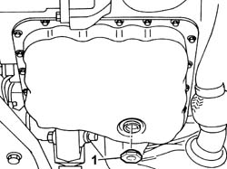
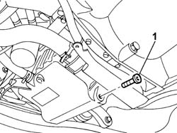
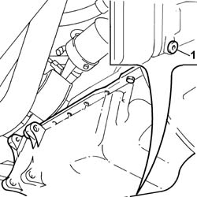

1020A30 ENGINE OIL DRAIN PLUG - REPLACE
- Path
- Procedures > 10 ENGINE > 1020 CRANKCASE SUMP AND COVERS > 1020A CRANKCASE OIL SUMP > 1020A30 ENGINE OIL DRAIN PLUG - REPLACE
- Kind
- repair procedure (removal / refitting; the operation number is the code)
- Applies to
- all engines; all production periods
- Interactive page
- https://sloeber94.github.io/elrnDB-fUlss/en/#/179006895
Applies to: engines: 3.0 24V V6; all production periods
 Removing
Removing
 Refitting
Refitting- Position the vehicle on a lift.
- Position a suitable container for collecting the engine oil.
1. Undo the plug and drain the engine oil into the container.

Applies to: engines: 3.0 24V V6; all production periods
Refitting
Removing- Replace the oil drain plug seal.
- Refit the oil drain plug and tighten it to the recommended torque.
 | Value - daNm | Fastening | Component | Ø |
|---|---|---|---|---|
. | 3.0 | Plug | ENGINE OIL DRAIN PLUG |
- Remove the vehicle from the lift.
Applies to: engines: 2.0 16v; all production periods
Removing
RefittingOp. 7055B54 UNDER ENGINE PROTECTION/GUARD - R.R.
Position a container to collect the engine oil.
1. Unscrew the engine oil drain plug and remove.

Applies to: engines: 2.0 16v; all production periods
Refitting
RemovingReplace the gasket with another with the same size and profile.
Fit the drain plug into the threaded seat on the sump and tighten to torque.
Value daNm | Fastening | Component | dia | |
|---|---|---|---|---|
. | 3.4 | Plug | ENGINE OIL DRAIN PLUG |
Op. 7055B54 UNDER ENGINE PROTECTION/GUARD - R.R.
Op. 0010T11 ENGINE OIL - CHECK LEVEL AND TOP UP, IF NECESSARY
Applies to: engines: 2.2 16V JTD; all production periods
Removing
RefittingPosition the vehicle on a lift.
Op. 7055B54 UNDER ENGINE PROTECTION/GUARD - R.R.
Place a container to collect the oil beneath the oil sump.
1. Unscrew the drain plug and collect the oil in the container.

Applies to: engines: 2.2 16V JTD; all production periods
Refitting
RemovingReplace the gasket with another with the same size and profile.
Fit the drain plug into the threaded seat on the sump and tighten to torque.
Op. 7055B54 UNDER ENGINE PROTECTION/GUARD - R.R.
Remove the vehicle from the lift.
Applies to: engines: 2.0 16V JTD; all production periods
Removing
RefittingPosition the vehicle on a lift.
Op. 7055B54 UNDER ENGINE PROTECTION/GUARD - R.R.
Place a container to collect the oil beneath the oil sump.
1. Unscrew the drain plug and collect the oil in the container.
Applies to: engines: 2.0 16V JTD; all production periods
Refitting
RemovingReplace the gasket with another with the same size and profile.
Fit the drain plug into the threaded seat on the sump and tighten to torque.
Op. 7055B54 UNDER ENGINE PROTECTION/GUARD - R.R.
Remove the vehicle from the lift.
Topics linked from this page (3)
- 0010T10 ENGINE OIL CHECK LEVEL AND TOP UP
- 0010T11 ENGINE OIL CHECK LEVEL AND TOP UP
- 7055B54 UNDER-ENGINE GUARD - R R